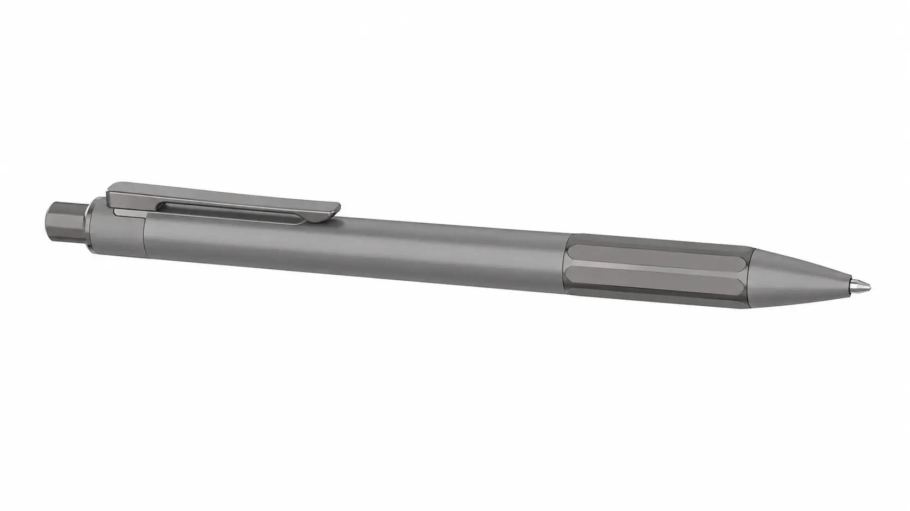

Object Study 01 / Ballpoint Pen
From parts,
to the rhythm of writing.
A visual prototype that studies how five external components work together as one calm, useful object.
2.5D visual prototype
01 / 05

01Pusher
02Clip
03Barrel
04Grip
05Cone
01Satin barrel
02Semi-gloss grip
03Metal detail
01
02
03
04
05
Drag to inspect
External anatomy
Five parts. One clear silhouette.
Inside the barrel
The quiet mechanism
behind one click.
01Cam / Ratchet
Locks the refill in writing or resting position.
02Spring
Returns the refill with controlled tension.
03Ink Refill
Stores ink and connects the mechanism to the tip.
04Ballpoint Tip
Transfers ink through a rolling ball onto paper.